История
Первые упоминания
Самым ранним изображениям единорогов больше 4 тысяч лет, это один из самых распространённых
художественных
мотивов Индской цивилизации. Гораздо позже единороги стали появляться в мифах Западной Азии. В Древней Греции и Древнем Риме считались реально существующими животными. Изображения единорога,
попадающиеся на древнеегипетских памятниках и на скалах Южной Африки, представляют собой рисунки антилоп с прямыми рогами (например, бейза
и
орикс), которые, будучи
изображены в профиль и без учёта перспективы, кажутся однорогими. Также встречались однорогие антилопы в
случае, если второй рог ломался в поединке.
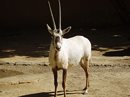
Первое упоминание об однорогом животном на Западе относится к V веку до н. э. Ктесий,
который
17
лет служил
лекарем при персидском
дворе, вернувшись в Грецию, поведал в своей книге «Описание Индии» о диких индийских ослах массивного
сложения,
имеющих один рог на лбу, а также красную голову, голубые глаза и туловище. По словам Ктесия, всякий, кто
выпьет
воды или вина из рога этого животного, никогда не будет подвержен болезням. Порошок, соскобленный с этого
рога,
может спасти от смертоносного яда. А поймать этих необычайно быстроногих ослов можно лишь тогда, когда
при них
находятся детёныши, которых родители не могут оставить. История Ктесия получила популярность благодаря
авторитету Аристотеля, кратко упомянувшего однорогих «индийских ослов» как «непарнокопытных» в
своей
«Истории
животных».Римский писатель Клавдий Элиан, родившийся около 170 года н. э., в книге «Пёстрые рассказы» говорит
о
трёх разновидностях единорога. >Первые два по описанию схожи с ослами Ктесия, а третий
—
картазон со спиральным чёрным рогом, охарактеризованный как животное «размером со взрослую лошадь,
рыжего окраса, имеющее гриву
лошади и очень быстрое». Картазоны в общем не опасны, сообщает автор рассказов, но самцы непримиримы
друг к
другу и нападают даже на самок. Нрав самцов смягчается во время гона, но с рождением детёнышей они
снова
свирепеют.В ранних традициях единорог изображался также с телом быка, козла и лошади. Некоторые
приписывали единорогу
слоновьи ноги и кабаний хвост, что послужило поводом для предположения, будто прообразом единорога был
носорог.
Плиний называет родиной единорогов страну индусов и Центральную Африку братьев Гримм
единорог отличается крайне агрессивным нравом, что ещё более подтверждает его сходство с носорогом. В
греческом
«Физиологе» отмечается, что единорог — «быстроногий зверь, носящий один рог и питающий злую волю в
отношении
людей»[2].В греческой мифологии единорог был посвящён Артемиде, богине-девственнице. У евреев
же
бытовала следующая легенда:когда Яхве попросил Адама дать имена всем животным, то единорог был первым из
наречённых и таким образом был возвышен. Когда Адам и Ева были
изгнаны из Рая, то Бог дал единорогу выбор: остаться в Эдеме или уйти с людьми. Единорог предпочёл
последнее и
был благословен за сочувствие к людям. Пожалуй, первым, кто авторитетно помещает единорога из дальних
стран в
Европу, является Юлий Цезарь. В своих «Записках о галльской войне» он рассказывает об олене с длинным
рогом,
обитающем в Герцинском лесу (в Шварцвальде).
Библия
С этим согласна Библия, где единорог («рээм») представлен как быстрое (Чис. 24:8), опасное,
свирепое
(Пс. 21:22) и свободолюбивое (Иов. 39:9) животное. Сегодня в большинстве современных переводов Библии это
слово передано как «зубр» или «дикий буйвол» (вымерший несколько веков назад).Английский перевод Библии
1611
года упоминает единорога по меньшей мере восемь раз. Слово «единорог» было выбрано в качестве названия
неукротимого животного рээм, которое в более ранних греческом и латинском переводах было названо
«моноцерий»
и
«юникорнис» соответственно (оба слова означают «однорогий»). В современном стандартизированном
американском
переводе рээм называется зубром. Библейские упоминания единорога приписывают ему силу, в особенности его
рогу.
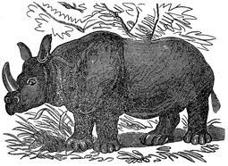
Средневековый образ
Средневековые представления о единороге возникли из древнегреческих записей и библейских упоминаний.
Основной
мотив единорога — связь с женской невинностью — пошёл из «Физиолога», предшественника европейских
бестиариев.
Согласно нему, стоит единорогу увидеть девственницу, он кладёт голову ей на колени и засыпает. Этот мотив
интерпретировался в контексте христианства: единорог трактовался как воскрешение Христа, а девственница —
как
Дева Мария. В XIII веке было распространено выражение «влюблённого тянет к его даме, как единорога к
девственнице». Позже единорог стал символом верного брака, целомудрия и семейных ценностей.
Народная
молва
приписывала рогу единорога способность исцеления от яда. Кубки из кости единорога, молоко
единорога и другие похожие товары пользовались большим спросом. Считалось, что единорог способен
определить,
девственна ли женщина, и что только девственница может оседлать единорога.
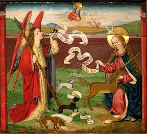
Геральдика
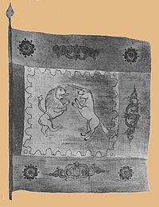
Единорог — геральдический символ осторожности, осмотрительности, благоразумия, чистоты,
непорочности, строгости, суровости[3]. Он изображается как конь с длинным витым рогом, раздвоенными
копытами,
львиным
хвостом, иногда — с козлиной бородкой[9]. Если единорог имел корону, то не на голове, а на шее, в виде
ошейника. В геральдических книгах единорог уподоблен отважному солдату, «который скорее готов погибнуть,
чем
живым попасть в руки врага». Существовало и иное метафорическое истолкование единорога на гербе
средневекового
рыцаря: «от храброго мужа враги бегут, как яд от чудесного рога». Это и прообраз монашеской жизни,
стремления к
уединению. Связь символики единорога с Девой Марией и Иисусом Христом высоко ценилась, из-за чего
некоторые
средневековые авторы высказывали мнение, что единорог не должен быть запятнан помещением его изображения
на
щит
или нашлемник. Однако к XVI столетию фигура геральдического единорога обрела популярность в родовых
гербах[10].
Иногда гербовой знак единорога власти даровали мастеру или торговой компании за высочайшее качество
товара.
Единорог называется прислонившимся (accule), когда он стоит прямо с поднятыми передними ногами, и в
оборонительном положении (en defense), когда хочет как бы защититься своим рогом. В других видах
встречался
редко.
Византийские императоры в государственной символике в сочетании с двуглавым орлом употребляли четыре
герба
крупнейших префектур бывшей Римской империи, а именно: орла Италии, грифа Галлии, единорога Азии и льва
Иллирии[11]
На золотых российских монетах изображался начиная со времен великого князя Московского Иоанна III и
оканчивая
правлением царя Алексея Михайловича Романова (начиная от Лжедмитрия I чеканился также на серебряных
монетах). С
1562 года единорог изображается на груди двуглавого орла, наравне со Святым Георгием, таким образом в
данную
эпоху их семантика была равнозначимой. Символ единорога содержится на двусторонних государственных
печатях
царя
Ивана Грозного: Большой (от 1562 года) и Малой (от 1571 года), также Больших
государственных печатях царей
Бориса Годунова, Лжедмитрия, Михаила Федоровича, Алексея Михайловича, на печати Большого дворца времени
царствования Михаила Федоровича. Печатью с единорогом скреплялись письма Ивана Грозного, носящие личный
характер, например переписка с Кирилло-Белозерским монастырем[12]; историк Татищев считал, что единорог
был
на личном гербе Ивана Грозного[9].
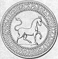 Единорог также изображен на
спинке трона царя Ивана Грозного, на церемониальных
топорах, сёдлах, оконных наличниках дворцов, на гербах российских дворянских родов Баташевых,
Бонч-Бруевичей,
Веригиных, Кудрявцевых, Мансуровых, Остафьевых, Романовских, Стрекаловых, Тургеневых, Шеншиных, Шуваловых
как
щитодержатель включён в гербы Болтиных, Ермоловых, Козловских, Салтыковых, Лорис-Меликовых.
На полной версии герба Красноярска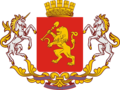 единорог является один из двух (наряду с
конём) щитодержателей, а на гербах
городов: Лысьва (Россия),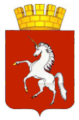
, Сен-Ло
(Франция),
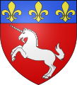
Лишниц (Чехия)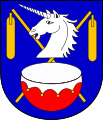
,
Виштынец
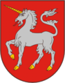 и
Меркине
(Литва),
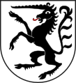Рамош
(Швейцария),
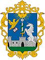 Эгер (Венгрия) , 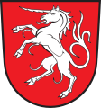
Швебиш-Гмюнд
и 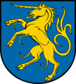
Гинген-на-Бренце (Германия) является центральной фигурой на щите.
Также,
единорог изображён в гербе канадской провинции Ньюфаундленд.
Пара единорогов является щитодержателями в гербе 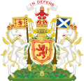Шотландии , по
одному — в государственных гербахВеликобритании и 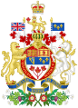Канады.На гербе Казахстана изображён тулпар, легендарное существо, совмещающее рог единорога и
крылья Пегаса.
Облик
Современный единорог больше всего похож на геральдического. Он чаще всего предстаёт белой лошадью с
прямым
или
чуть изогнутым витым рогом в центре лба, длинными струящимися хвостом и гривой, обычно тоже белой,
серебристой,
золотистой или искрящейся гривой. Он воплощает представления об идеальной лошади: гармоничное мускулистое
тело,
природная грация, выразительные глаза, сияние жизненной силы. Единороги такого облика достаточно велики и
сильны, чтобы нести на себе всадника.
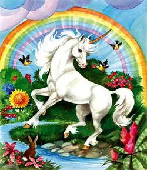
Иногда единорога изображают более декоративно, с чертами тела, приближёнными к средневековому
представлению.
Описание такого облика даёт Питер Бигль в «Последнем единороге»:
Она была совсем не похожа на тех однорогих лошадей, которых люди рисуют в книжках и
называют
единорогами.
Она
была меньше лошади, копыта её были раздвоены, и была Она прекрасна той древней и дикой красотой, которой
никогда не было у лошадей, которой стыдливо и неубедительно подражают олени и шутовски пародируют козы.
Длинная
и стройная шея делала её голову меньше, чем она была на самом деле, а грива, ниспадавшая почти до
середины
спины, была мягкой как пух и легкой как дымка. У неё были остроконечные уши и тонкие ноги с пучками белых
волос
на лодыжках, длинный рог над глазами сиял перламутровым светом даже в глубокую полночь.
Другая вариация единорогов — это разные цвета и окрасы. Чаще всего цвет также указывает на характер
существа:
популярные чёрные единороги — злые антиподы белых. Иногда изображают полосатого единорога-зебру. В книге
Питера
Бигля «Соната единорога» единороги разных цветов относятся к разным стихиям.
Нередко образ единорога комбинируют с образом пегаса, получая крылатого единорога. Такое существо может
называться как пегасом, так и единорогом.
Особенности
Рог
Рог — одна из определяющих черт единорога. Существ, представляющих из себя лошадь с рогом (например,
покемона
рапидаш), сравнивают с единорогом даже в отсутствие других черт. Рог единорога чаще всего изображается витым (с
спиральным рельефом, завивающейся вокруг центральной оси) и прямым либо немного изогнутым. В современных
изображениях длина рога обычно сопоставима с длиной морды, но в исторических она могла превышать её в два
раза
и более. Также в исторических изображениях рог мог быть не перпендикулярен лбу, а под острым углом к
морде,
близко к направлению взгляда.
Рог представляет из себя и инструмент, и оружие, и средоточие силы[7]. Единорог может пронзить рогом,
особенно
встав на дыбы или разогнавшись. Иногда рог также способен поражать лучом света, ослепляя или обжигая
противника. Вместе с этим именно рог обычно используется для других способностей единорога: исцеление,
очищение, снятие оков. Как правило, при сверхъестественном применении рог ярко светится.
В некоторых произведениях рог отделяется от единорога, когда тот превращается в человека. Он может
принять
вид
оружия (обычно меча), музыкального инструмента или остаться таким, как есть. Потеряв рог, единорог скорее
всего не сможет вернуть свой облик. Другие единороги периодически сбрасывают рога так же, как это делают
олени.
Рог является предметом охоты на единорогов, и если его удаление связано с вредом или смертью существа, он
является
одновременно воплощением чистоты и греха. Например, так обстоят дела во вселенной «Гарри Поттера».
Сила жизни
Первое описание единорога связывает его с лечением и защитой от ядов. Этот образ усиливается в XV веке,
когда единорога ассоциируют с воскрешением Христа, целомудрием и чистотой. В современных произведениях
единороги чаще всего обладают какой-либо способностью исцеления и защиты. Например:
- В стратегии «Warlords
Battlecry 3» единорог может восстанавливать здоровье, лечить яды и болезни на всех
окружающих существах.
- В стратегии «Heroes of Might and Magic» нахождение рядом с единорогом защищает от магии
(третья и пятая
части серии).
- В ролевой игре «Dungeons
&
Dragons» третьей редакции единорог обладает
способностями «малое лечение», «среднее лечение» и «нейтрализация ядов».
Единорогов часто ассоциируют с природой. Такие единороги могут говорить с животными, и само их
присутствие
может улучшать экологию местности. Иногда можно определить место обитания единорога по тому, что растения
в
нём особо зелены, животные водятся в обилии и не попадаются охотникам, а природные бедствия обходят этот
участок стороной. Единорог может влиять на природу явно, прикосновением рога ускоряя рост растений,
исцеляя
недуги, освобождая зверей из клеток.
В некоторых произведениях единороги могут видеть душу существ
(зрительно или прикосновением рога), а также
обладают особым преимуществом в сражениях со злом.
Неуловимость
Единорог долгое время считался реально существующим животным, и его поиски продолжались даже в XIX
веке[8].
Неуловимость стала частью его мифа. Её объясняли по-разному: редкостью, свирепостью, хитростью… В
современных произведениях единорогов иногда наделяют особыми способностями, помогающими оставаться
неуловимым. Это может быть невидимость (возможно, только в лесу), телепортация или тот факт, что любые
замки, решётки и оковы открываются и пропускают единорога.
В Средние века был популярен мотив охоты на единорогов. Самым надёжным способом считалось укрощение
девственницей. Например, так этот метод описал Леонардо да Винчи: «Хотя и будучи буйным созданием без
всякой
меры, единорог забывает о своей дикости и свирепости во имя сильной любви к благочестивым девам; отбросив
страх, он сам приближается к сидящей даме и засыпает у неё на коленях, тогда охотники беспрепятственно
ловят
его». Считалось, что укрощённый таким образом единорог остаётся счастлив и спокоен даже в плену. Другой
метод описан в книге «Последний единорог» (от лица единорога) и, вероятно, заимствован из способа охоты
на
кицунэ: «Раньше на меня охотились с колоколами и знамёнами. Тогда люди знали, что меня можно поймать,
лишь
сделав охоту настолько удивительной, чтобы я от любопытства подошла поближе. Но даже тогда меня ни разу
не
поймали».
Одна из форм укрощения — верховая езда. В Средние века считали, что только девственница может оседлать
единорога, а остальных зверь скидывает. В современной культуре единороги часто встречаются в качестве
ездовых существ, но и тогда обычно указывается их свободоволие: единорог соглашается везти только того,
кого
считает другом или (как правило, в стратегиях) с кем у народа единорогов союз.
Реальный «единорог»
Генетические отклонения
В 2008 году в Тоскане был обнаружен молодой 10-месячный самец косули с одним рогом, растущим
ровно и
симметрично посреди лба. В настоящий момент[уточнить] жив, для сохранения перевезён в природоохранный
центр
Прато[7].
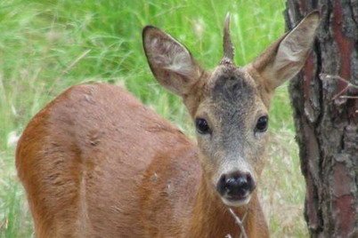
Хирургический метод
Однорогие животные могут быть получены и искусственно, посредством операции. Данный метод основан на
анатомической особенности жвачных животных, чьи рога растут не напрямую из черепа, а из нароста роговой
ткани. В 1933 году подобная операция произведена биологом У. Франклином Давом из университета штата Мэн
(США). Новорождённому йоркширскому телёнку были пересажены два роговых нароста в центр лба, в результате
чего у животного вырос длинный прямой рог. Повзрослевшему быку рог придал значительную уверенность, так
как
прямой центральный рог в виде оружия мог использоваться более эффективно. В связи с этим заслуживает
внимания упоминание Плиния Старшего о схожей трансплантации в Древнем мире, но с противоположным
результатом: в одиннадцатой книге «Естественной истории» описан случай получения четырёх рогов из одного
нароста.
Представитель мегафауны
Существует предположение, что в описании единорога отразился след вымершего животного эласмотерия —
носорога
степей Евразии, обитающего в ледниковый период южнее ареала шерстистого носорога; изображения эласмотерия
встречаются в пещерной росписи того времени. Эласмотерий отчасти напоминал лошадь с чрезвычайно длинным
рогом во лбу. Он вымер примерно в то же время, что и остальная часть евразийской мегафауны ледникового
периода[8]. Однако, согласно шведской энциклопедии «Nordisk familjebok» и доводам популяризатора науки
Вилли
Лея, животное могло просуществовать достаточно долгое время, чтобы успеть попасть в легенды эвенков как
огромный чёрный бык с одним рогом во лбу.
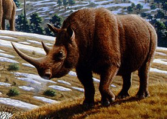
Звезда Инстаграма
Соцсети помогли выманить магическое существо в реальность — однорогий конь отлично выглядит и в качестве
эмодзи, и среди радуг в Инстаграме.
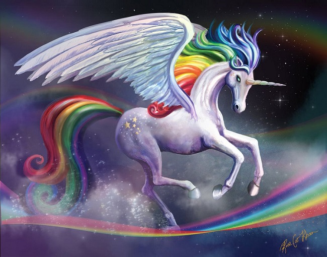
А даже в 2015 году был учрежден Национальный День Единорога — 9 апреля.
«Единороги» как поисковый запрос достигли своего пика в апреле 2017 года, тогда же, когда Starbucks
представили фраппучино «Единорог», и тем самым запустили тренд на добавление блесток и радужных цветов в еду
и
напитки.Теперь единорогов продают детям и взрослым, в виде изображений на чашках и футболках, брелоков и
мягких игрушек. Только посмотрите вокруг: единороги – часть попкультуры.